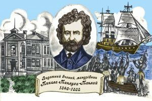
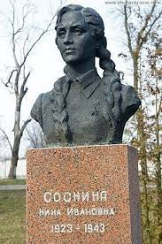
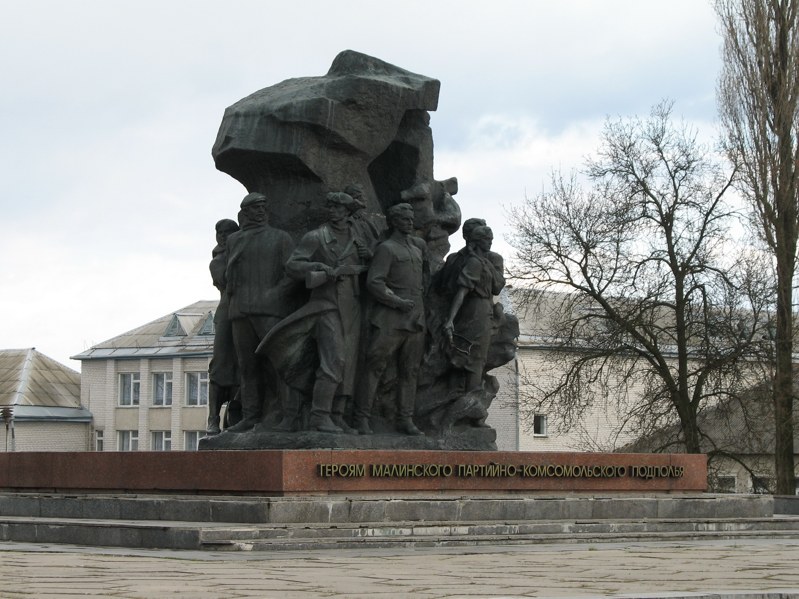
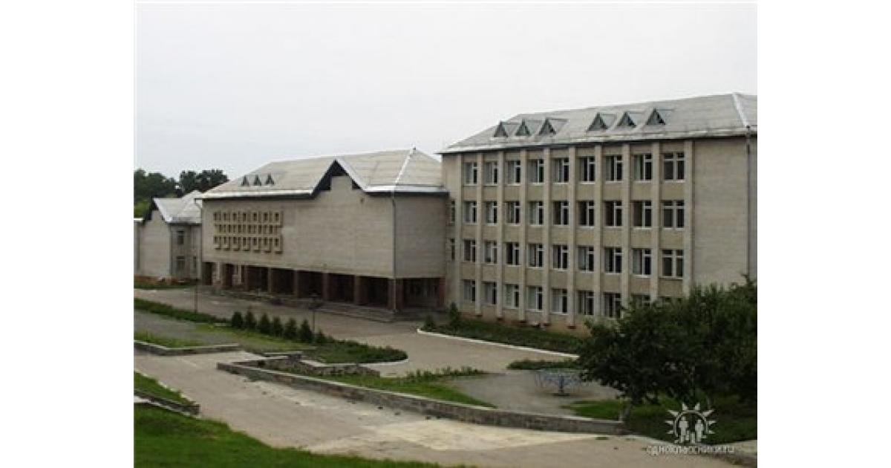
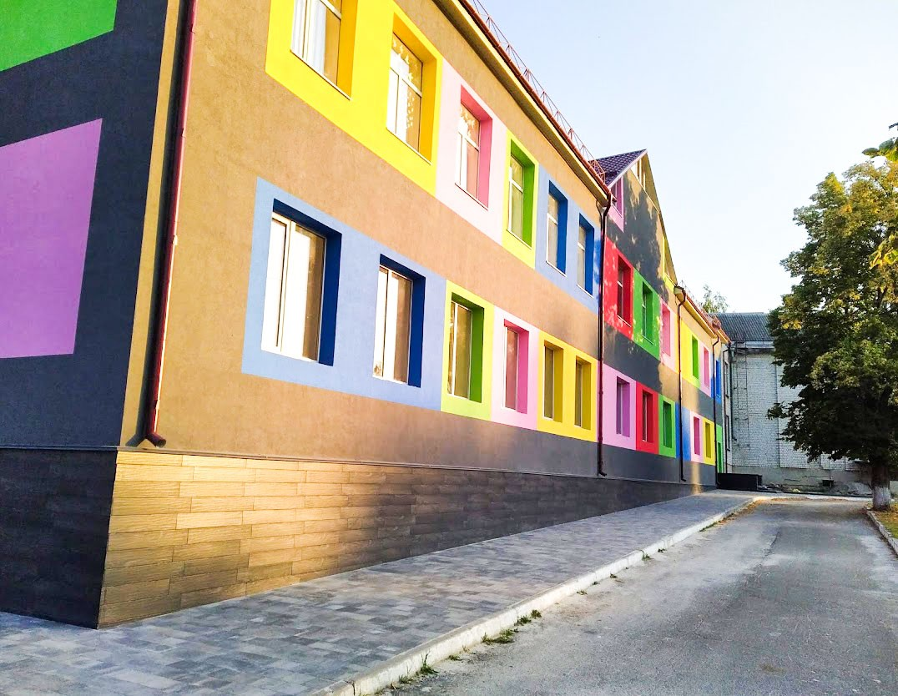
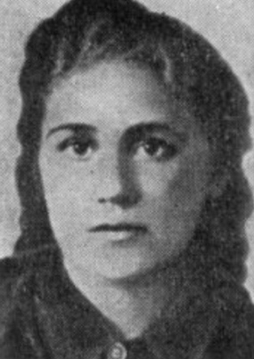

Слова В. Лісовського Музика Л. Римарчука
Ледве-ледве світає навколо -
Ранню тишу пробуджують кроки
Я щодня
поспішаю до школи,
Тут на мене чекають уроки.
Приспів
Я
твою захищатиму волю -
Україно, гордитимешся мною,
Учнем
першої Малинської школи -
Школи імені Ніни Сосніної.
Тут
моя почалась Україна
Різнобарв'ям Поліського краю.
В
нашій школі навчалася Ніна -
Я постійно про це пам'ятаю.
Приспів
Як настане хвилина прощання,
Рідна школо, даю
тобі слово -
Тільки в полі зустріну світання,
І до тебе
постукаю знову.
Приспів
Історична довідка
1860-1920 рр.
1860 рік. Початок історії
закладу - церковно-парафіяльна
школа в Малині.
1862 рік – сільське однокласне
народне училище, навчання у
якому тривало 2 роки. З 1902
року вже стає двокласним, а в
1915 році реорганізується у
міністерське вище училище,
почесним попечителем якого був
М.Миклухо-Маклай.
З січня 1920 року на території
міста в результаті об’єднання
колишнього міністерського вищого
початкового училища та
церковно-парафіяльної школи було
утворено Першу районну трудову
школу. Очолив педагогічний
колектив Б.Л.Шулькевич.

1930-1949 рр.
1930-й рік – Малинська
українська фабрично-заводська
семирічна школа. Її директором
був І.М.Затинацький. Саме за час
його керівництва школа стає
зразковою.
1933-й рік – Малинська зразкова
фабрично-заводська десятирічка.
На початок 1933-1934 навчального
року вона була найбільшою у
місті, де у 18 класокомплектах
навчалось 533 учні.
У період з 1936 по 1941 рік у
Малинській середній школі №1
здійснено шість випусків, але
навчання перервала війна. Учні
та вчителі були активними
учасниками підпільної
організації. Її у 1941 році
очолив П.А.Тараскін, а після
його загибелі у 1943 році -
Н.І.Сосніна, учениця школи.
Школа відновила свою роботу в
кінці грудня 1943 року. Вона
розмістилась у двох будинках:
колишній богодільні католицького
костьолу та двоповерховому
приміщенні на площі 25 Жовтня
(нині Соборна площа).
26 грудня 1949 року було здано в
експлуатацію відбудований перший
корпус. Протягом 1949 року школу
очолювали троє директорів:
Д.Зубрій, І.Кравченко і, від 27
серпня, А.Г.Сісевич –
досвідчений педагог і прекрасний
організатор шкільної справи.

60-ті роки
У 1961 році були завершені
роботи по відбудові ще одного
навчального корпусу, що
дозволило перевести навчання на
однозмінний режим. Для
забезпечення ефективного
навчання дітей із сільської
місцевості був організований
гуртожиток. У зв’язку з цим у
1965 році до другого корпусу
прибудували приміщення.
«З метою увічнення пам’яті
керівника Малинської підпільної
комсомольської організації Ніни
Сосніної, що загинула в боротьбі
з німецько-фашистськими
загарбниками, Малинській
середній школі №1 присвоєно ім’я
Ніни Сосніної» ( із Постанови
Ради Міністрів Української РСР
від 18 березня 1965 року).
Наприкінці 1964-65 н.р. в школі
працюють 65 педагогів, у 30
класах навчається 1066 учнів.
На початок 60-х років діяли три
майстерні по дереву, слюсарна і
механічна. Також розпочиналося
вивчення автомобільної та
тракторної справи.
Завдяки активній діяльності
учнів та вчителів вдалося
створити музей славетної
землячки, котрий розпочав своє
функціонування в 1966 році.
Шкільний музей Ніни Сосніної
виконував важливу виховну
функцію не лише в самому
навчальному закладі, але й по
всій країні. На кінець 1987 року
в ньому побували вже близько 85
тисяч осіб з різних куточків
Союзу РСР, а також із Болгарії,
Польщі, Чехії, Словаччини,
Німеччини, Індії, Йємена,
Угорщини, Куби, Сполучених
Штатів Америки, Канади та
багатьох інших країн світу.

1970-1998 рр.
Головним напрямом діяльності
навчального закладу був, є і
залишається навчальний процес.
З 1971-72 н.р. у навчальний план
школи введено виробниче навчання
– автосправу.
Початок 80-х років – відкриття
нових профілів: будівельної,
токарної, торговельної справи.
1991-92 н.р. – Малинська
загальноосвітня школа №1 імені
Ніни Сосніної І-ІІІ ступенів.
Перехід на шлях
диференційованого підходу до
навчання: диференціація рівнева,
зовнішня.
У всіх паралелях – «класи
сильні», «вікової норми» та
«ЗПР». Учнівський склад кожної
паралелі динамічний, змінюється
залежно від досягнення кожним
учнем обов’язкових результатів
навчання. На цей час у школі
1720 учнів, 100 вчителів, 66
класів.
Поряд з рівневою – диференціація
профільна: класи математичні, з
поглибленим вивченням фізики,
образотворчого мистецтва,
екологічний, вивчення іноземної
мови з першого класу.
1996-97 н.р. Введено в дію нове
чотириповерхове приміщення.
1997-98 н.р. Налагоджено зв’язки
з факультетом профорієнтації та
післядипломної освіти УДПУ
ім.М.Драгоманова. Започатковано
педагогічні класи за профілями:
українська та англійська мови,
математика, інформатика,
історія, правознавство,
географія, біологія, хімія,
початкове навчання, практична
психологія, сурдопедагогіка. З
38 учнів педкласу – 19 успішно
навчаються у педагогічних вузах.

1999-2023 рр.
1999-2000 н.р. Реорганізація
школи у ЗНВК «Школа-ліцей №1
імені Ніни Сосніної» І-ІІІ
ступенів. У школі шість
математичних профільних класів,
сім гуманітарних, природничий,
спортивний, клас з поглибленим
вивченням англійської мови.
Вчителі працюють за авторськими
програмами, за адаптованими для
роботи у профільних класах,
видають власні посібники.
Укладено угоди про співпрацю між
факультетом довузівської
підготовки НТУУ «КПІ»,
Національним педагогічним
університетом імені М.П
.Драгоманова та навчальним
закладом.
2022 рік. Перейменування ЗНВК
«Школа-ліцей №1 імені Ніни
Сосніної» І-ІІІ ступенів у
Малинський ліцей №1 ім. Ніни
Сосніної Малинської міської
ради.

Пісня школи
Хто ж така Ніна Сосніна?

Ніна Іванівна Сосніна
Сосніна Ніна Іванівна — керівник підпілля в Малині у роки Другої світової війни. Народилась у родині лікаря. Жила та навчалась у селищі Пісківка Київської області , потім її сім'я переїхала до Малина, де 1941 року вона закінчила 9 класів середньої школи 1. Восени 1941 року, залишившись в окупації, створила підпільну групу, влившись на початку 1942 року в міську підпільну організацію. Малинське підпілля активно вело роз'яснювальну та контрпропагандистську роботу на окупованій території, виготовляло та розповсюджувало листівки антинацистського змісту.